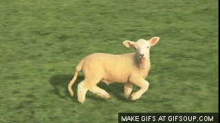
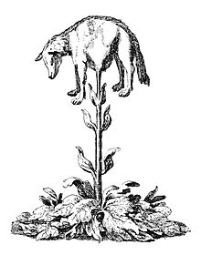

The Vegetable Lamb of Tartary
Life

So basically there are lots of version of this story, and for some reason the way
they are born is always different. One of the most popular reasons for the way they
are born is actually via a special seed. The way this seed works is that people sometimes
just drop it and it sprouts on its own.

The thing basically starts sprouting until it becomes big enough to kinda walk around the plant and
start eating grass around the area. It gets bigger by eating this grass, and this kinda contributes
to the growth of the plant as well.